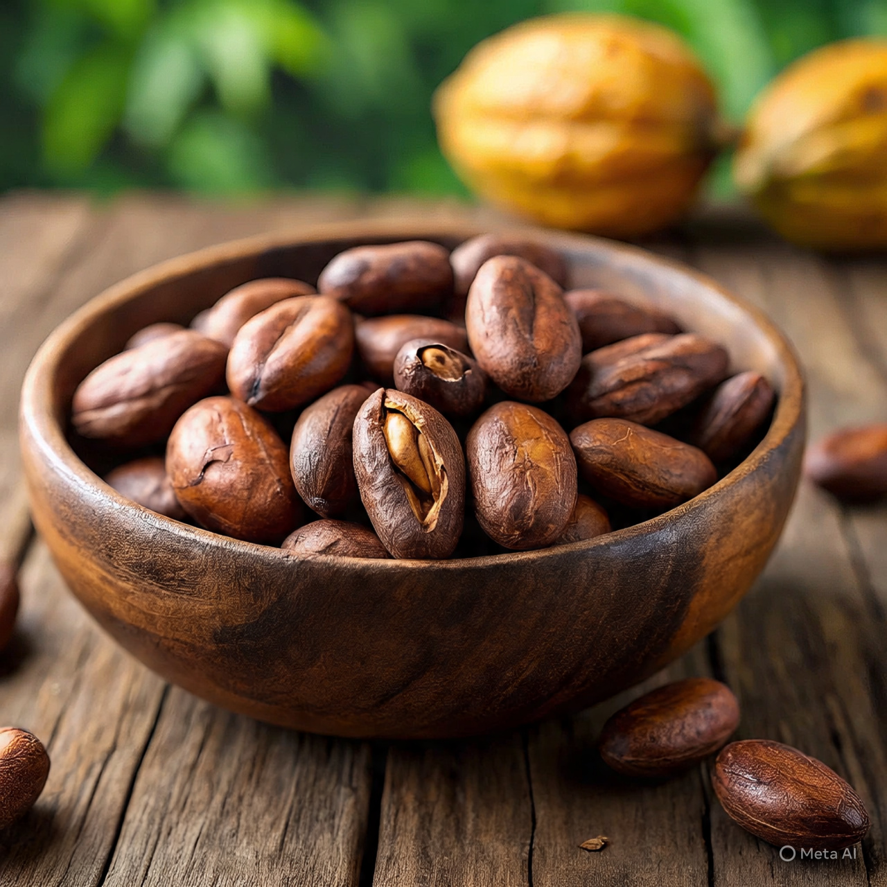
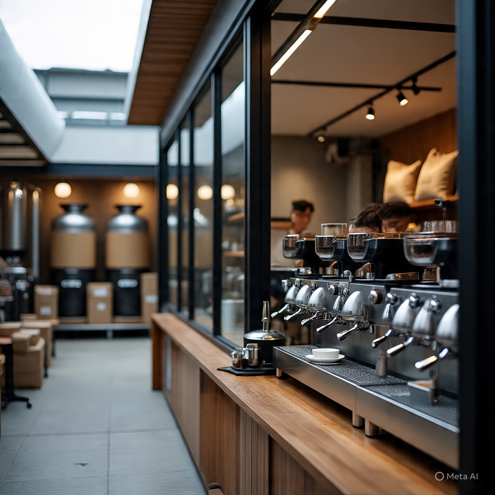
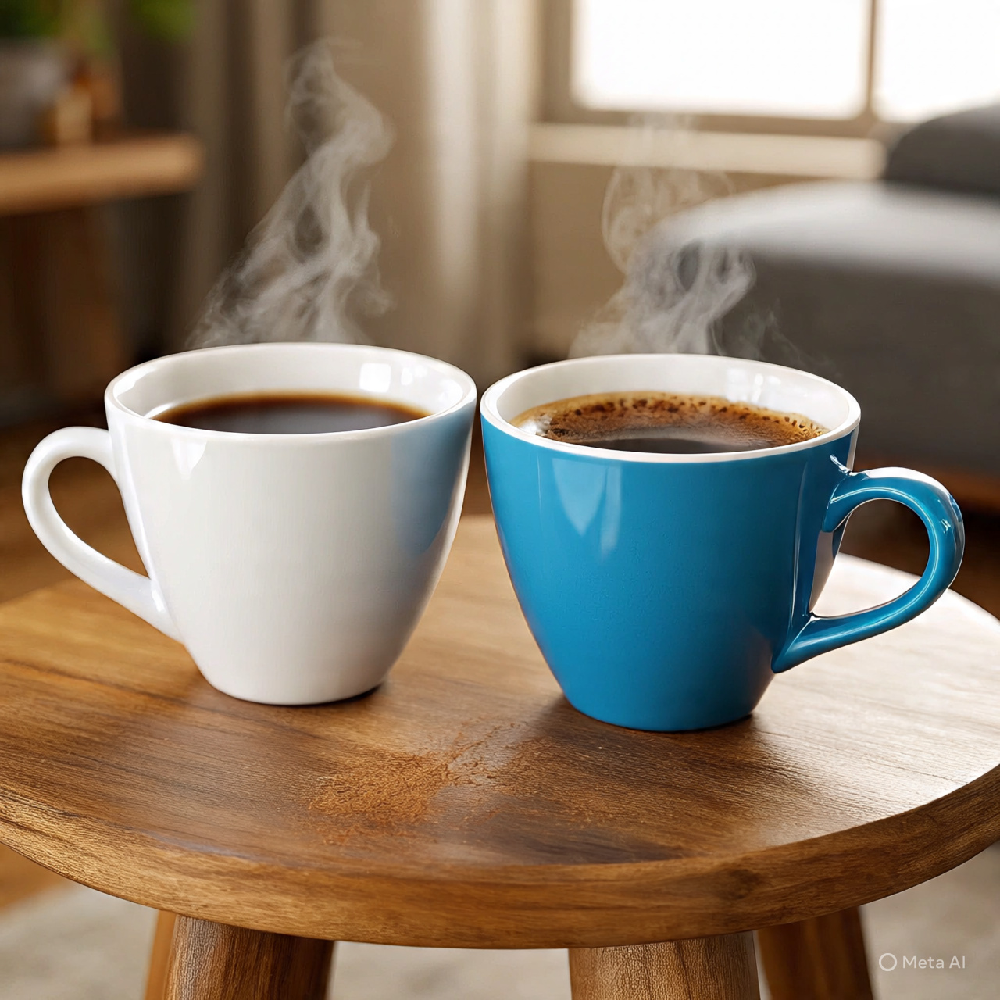

Café de especialidad — despacio, a propósito
El silencio
tiene aroma
a café recién hecho.
Seleccionamos, tostamos y servimos granos de origen para que cada taza sea una pausa real: un minuto tuyo, sin prisa, entre el primer sorbo y el último.
Nosotros
Cuidamos el café desde la raíz
hasta la taza.
Somos un distribuidor de café de especialidad que cree que la calma también se cultiva. Trabajamos directo con productores comprometidos con el cultivo sostenible, eligiendo únicamente lotes de grano verde y tostado de calidad superior de distintas regiones cafeteras.
Abastecemos cafeterías, restaurantes y hoteles que buscan consistencia y una historia real detrás de cada bolsa. Trazabilidad, logística cuidada y acompañamiento cercano — porque un buen café no se vende, se comparte.
Hablemos de tu carta de café


El ritual
Cuatro minutos que marcan
el resto del día.
Así preparamos cada pour-over en LiveCoffee. No es una lista de servicios: es el tiempo real que el café necesita para entregarte todo su aroma. Nada se apura.
-
0:00
Floración
Vertemos agua a 92° sobre el café recién molido. El grano libera su primer aroma y se hincha: es el CO₂ escapando, señal de un tueste fresco.
-
0:30
Primer vertido
En círculos lentos, del centro hacia afuera, dejamos que el agua atraviese el café sin ahogarlo. Aquí se define el cuerpo de la taza.
-
1:45
Segundo vertido
Un segundo riego más generoso equilibra la acidez y realza las notas dulces y frutales propias del origen del grano.
-
3:00
Reposo y servido
Dejamos que el filtro drene por completo. Sin remover, sin apurar. Lo que queda en la jarra es la calma, servida.
Clientes
Quienes ya bajaron
el ritmo con nosotros
Desde que trabajamos con este distribuidor, la calidad de nuestro café subió un escalón. No solo entregan granos excelentes: acompañan todo el proceso. Se nota la pasión y el compromiso real.
Trabajar con LiveCoffee cambió nuestra cafetería. Los granos llegan siempre frescos y nuestros clientes lo notan. El equipo responde rápido y se involucra como un socio, no como un simple proveedor.
Trabajamos con varios proveedores a lo largo de los años, pero este distribuidor se destaca por su consistencia y atención al detalle. Es raro encontrar un socio que entienda tan bien el producto y el negocio.
Contacto
Contanos qué taza
estás buscando
Respondemos en menos de 24 horas hábiles. Sin formularios eternos, sin apuro tampoco.
- hola@livecoffee.com
- +54 9 362 000-0000
- Chaco, Argentina